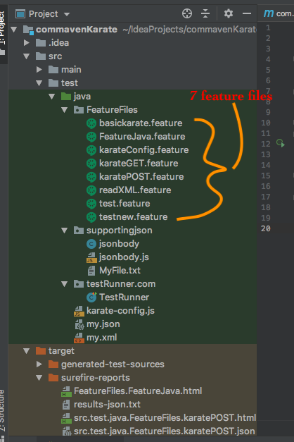

First we need to set up Maven in our system :
Windows: Download maven from Here
Unzip it, set MAVEN_HOME as 'maven unzip path/bin'. Same in windows PATH as well.
MAC:Install maven from Terminal : brew install maven
Using Terminal check maven version as below:
mvn -v
Add below code in your pom.xml
<properties> <maven.compiler.source>1.7</maven.compiler.source> <maven.compiler.target>1.7</maven.compiler.target> </properties>
My complete pom.xml now looks like below:
<?xml version="1.0" encoding="UTF-8"?> <project xmlns="http://maven.apache.org/POM/4.0.0" xmlns:xsi="http://www.w3.org/2001/XMLSchema-instance" xsi:schemaLocation="http://maven.apache.org/POM/4.0.0 http://maven.apache.org/xsd/maven-4.0.0.xsd"> <modelVersion>4.0.0</modelVersion> <groupId>com.maven.Karate</groupId> <artifactId>com.maven.Karate</artifactId> <version>1.0-SNAPSHOT</version> <properties> <maven.compiler.source>1.7</maven.compiler.source> <maven.compiler.target>1.7</maven.compiler.target> <karate.version>0.9.4</karate.version> </properties> <build> <testResources> <testResource> <directory>src/test/java</directory> <excludes> <exclude>**/*.java</exclude> </excludes> </testResource> </testResources> </build> <dependencies> <dependency> <groupId>com.intuit.karate</groupId> <artifactId>karate-apache</artifactId> <version>0.9.5</version> </dependency> <dependency> <groupId>com.intuit.karate</groupId> <artifactId>karate-junit4</artifactId> <version>0.9.5</version> </dependency> </dependencies> </project>
Now testRunner file will look like below :
package testRunner.com; import com.intuit.karate.junit4.Karate; import org.junit.runner.RunWith; import com.intuit.karate.KarateOptions; import org.junit.BeforeClass; @RunWith(Karate.class) @KarateOptions(features = "classpath:FeatureFiles/FeatureJava.feature") public class TestRunner { @BeforeClass public static void before() { System.setProperty("karate.env", "STG"); } }

Below command would execute all feature files [as per above image 7 feature files] present under 'FeatureFiles'package having @Regression tag.
Open cmd/terminal
cd 'karate project path'
mvn test -Dkarate.options="--tags @Regression classpath:FeatureFiles"

Below command would execute 'test.feature' feature file present under 'FeatureFiles'package having @Smoke tag.
Open cmd/terminal
cd 'karate project path'
mvn test -Dkarate.options="--tags @Smoke classpath:FeatureFiles/test.feature"
Below command would execute 'test.feature' feature file present under 'FeatureFiles'package not having @Smoke tag.
Open cmd/terminal
cd 'karate project path'
mvn test -Dkarate.options="--tags ~@Smoke classpath:FeatureFiles/test.feature"